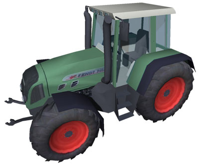
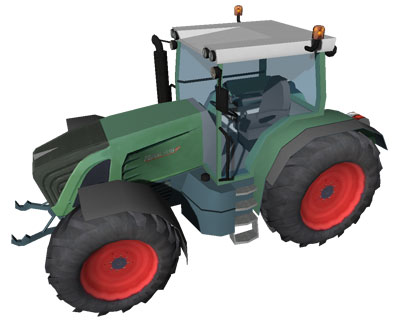
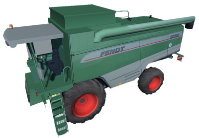
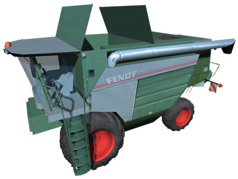

Vehicles
Fendt 716
Motor power: 123 kW / 167 PS
Fendt 936
Motor power: 261 kW / 355 PS
Fendt 5270c

Cutter width: 6,00 Meter
Corn storage: 9.000 (l)
Threshing unit surface m²: 0,82
Motor power: 203 KW / 277 PS
Tank capacity: 450 (l)
Shaker units: 5
Fendt 8350

Cutter width: 7,70 Meter
Corn storage: 10.500 (l)
Threshing unit surface m²: 1,06
Motor power: 258 KW /350 PS
Tank capacity: 750 (l)
Shaker units: 8